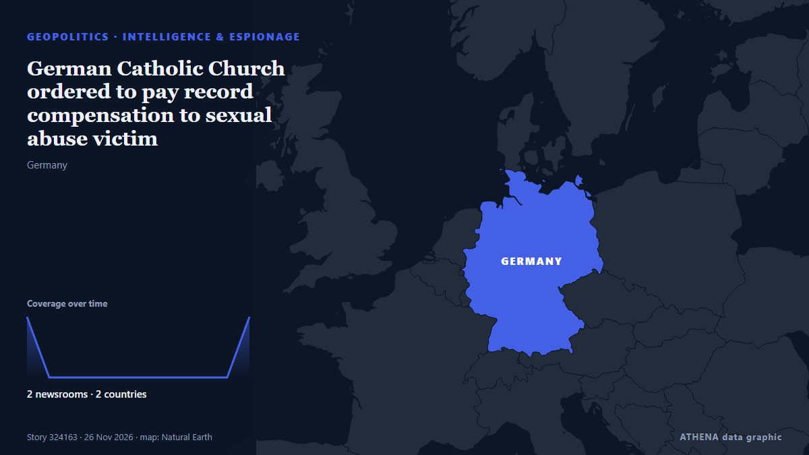

Renseignement et espionnage
SponsoriséPrésenté par  Cybernetics and Artificial Intelligence Lab Welcome to the Cybernetics and Artificial Intelligence Laboratory, established at the Department of Business Administration of the National and Kapodistrian University of Athens. The lab is headed by Professor Dimitrios Thomakos. The lab aims to do research that can be published in top venues. Our research uses tools and methods of Artificial Intelligence, and lies in the following areas: - Forecasting - Decision making - Cyber security - Finance We are always looking forward to collaborating with exceptional students!
Cybernetics and Artificial Intelligence Lab Welcome to the Cybernetics and Artificial Intelligence Laboratory, established at the Department of Business Administration of the National and Kapodistrian University of Athens. The lab is headed by Professor Dimitrios Thomakos. The lab aims to do research that can be published in top venues. Our research uses tools and methods of Artificial Intelligence, and lies in the following areas: - Forecasting - Decision making - Cyber security - Finance We are always looking forward to collaborating with exceptional students!
| 14 nov. | 0 |
|---|---|
| 15 nov. | 0 |
| 16 nov. | 0 |
| 17 nov. | 0 |
| 18 nov. | 0 |
| 19 nov. | 0 |
| 20 nov. | 0 |
| 21 nov. | 1 |
| 22 nov. | 0 |
| 23 nov. | 1 |
| 24 nov. | 4 |
| 25 nov. | 5 |
| 26 nov. | 2 |
| 27 nov. | 0 |
Les titres sont affichés en anglais, tels que publiés.

German Catholic Church ordered to pay record compensation to sexual abuse victim
A court has awarded the highest damages ever in Germany to a victim of sexual abuse linked with the Catholic Church. de DW English
Cybersecurity Breach Reported At CIA And National Intelligence Director’s Office
The breach impacted open-source intelligence data. de Forbes Business
The Silicon Valley kill chain
Iran’s warning at the United Nations Security Council this week was not only about bombs and missiles. de Tehran Times
Unclassified CIA system breached in cyberattack: Report
A CIA system faced a cyberattack and was breached, according to a new report that comes in the wake of multiple tech failures over the past month. de The Hill
RSF commander switches sides, joins Sudanese army with fighters
Major General Ammar Mohammed Zein Rabih cites alleged massacres, killings and looting of civilians in Khartoum, Darfur and Gezira as reasons for breaking away from the paramilitary force. de TRT World
UK’s MI5 warns local defense firms of Russian sabotage risk
The alert urges industry to respond immediately and “reduce opportunities for hostile actors to identify your organisation or people as targets, conduct hostile reconnaissance, and attack people… de Breaking Defense
Iran moves to restructure Intelligence Ministry as 5 contenders emerge to lead it
Eight months after Israel assassinated Iran’s intelligence minister, parliament is pursuing two bills that would expand Supreme Leader Mojtaba Khamenei’s direct authority over the ministry and… de Long War Journal
Cyprus expels two Russian diplomats over suspected espionage – Politico
Two Russian diplomats suspected of espionage have been expelled from Cyprus. de Ukrinform (English)
China 'sentences official to death for spying'
China has sentenced to death an official who was said to have leaked state secrets to a foreign country. de Sky News (World)